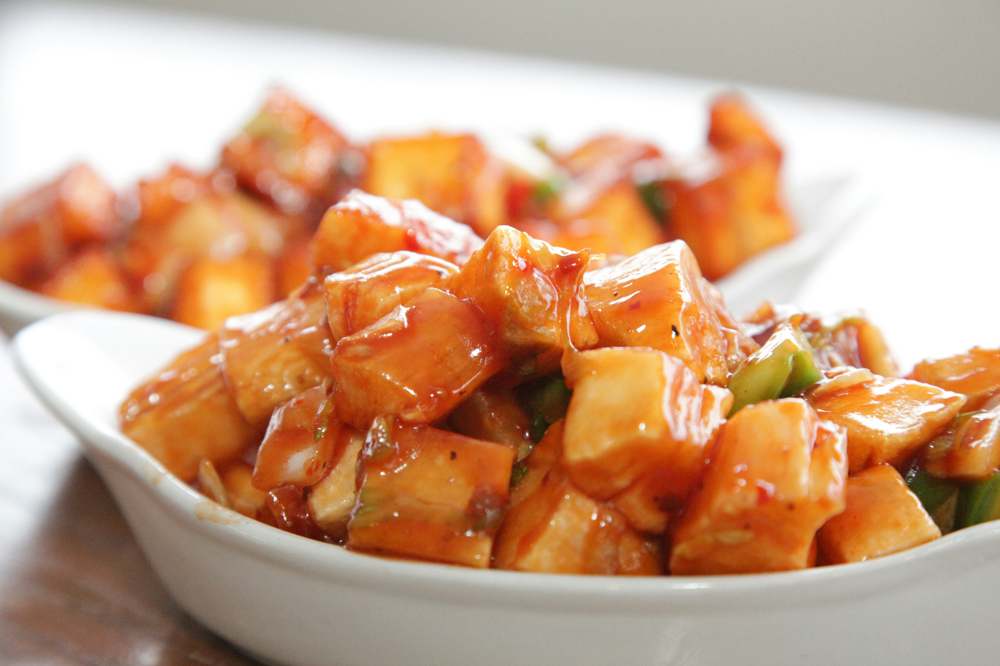

Paneer Manchurian
Here is an image for you to see what the Paneer Manchurian is going to look like once you have finished making it!

Description
Paneer Manchurian is a popular Indo-Chinese appetizer consisting of crisp, batter-fried paneer (Indian cottage cheese) cubes tossed in a savory, spicy, and tangy soy-based sauce.
It features aromatics like ginger, garlic, and green chilies, finished with spring onions.
It is served either as a "dry" starter or in a "gravy" form with noodles or fried rice.
- Prep Time: 15 mins
- Cook Time: 15 mins
- Total Time: 30 mins
- Servings: 3
Ingredients:
- 2 cups cubed paneer (Indian cheese curd)
- ¼ cup cornstarch
- ¼ cup vegetable oil
- 4 cloves garlic, minced
- 1 (1 inch) piece fresh ginger, grated
- 1 onion, chopped
- 4 green chile peppers, halved
- 1 bell pepper, diced
- 2 tablespoons soy sauce
- 2 tablespoons chile sauce
- 2 tablespoons tomato sauce
- 1 teaspoon white sugar
- ½ teaspoon salt
- 2 tablespoons water
- ¼ cup chopped fresh cilantro
- 2 green onions, chopped
Steps:
- Place paneer in a bowl and add enough cornstarch to coat; mix well.
- Heat oil large skillet over medium heat; fry paneer until golden brown, 1 to 2 minutes per side.
Transfer paneer to a paper towel-lined plate, reserving oil in the skillet.
- Combine garlic and ginger in the hot oil; add onion, green chile peppers, and bell pepper.
Cook and stir until vegetables are golden brown, about 5 minutes.
- Mix soy sauce, chile sauce, tomato sauce, sugar, salt, and remaining cornstarch into onion mixture, stirring in water if mixture is too thick.
Add paneer; cook and stir until gravy is thickened, 2 to 3 minutes.
Remove skillet from heat and garnish chili with cilantro and green onions.
Are you searching for other recipes? You might find them here!